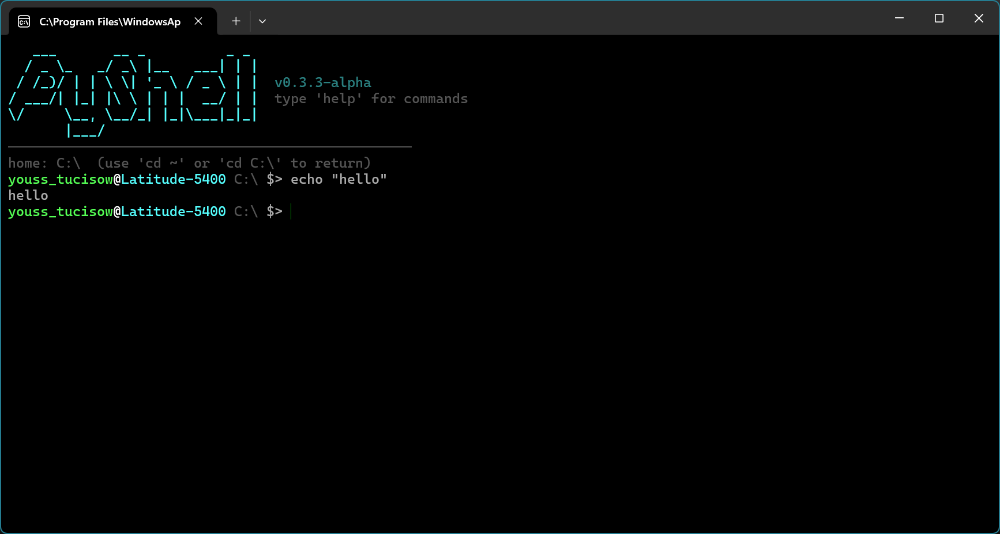
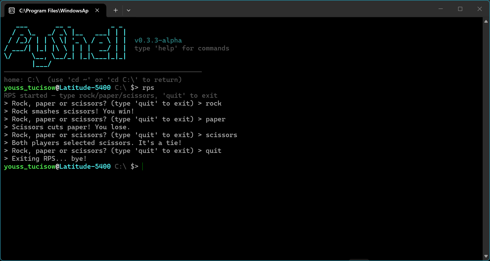
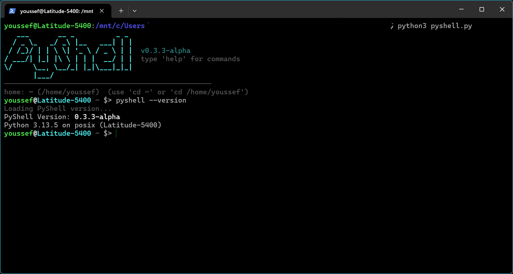
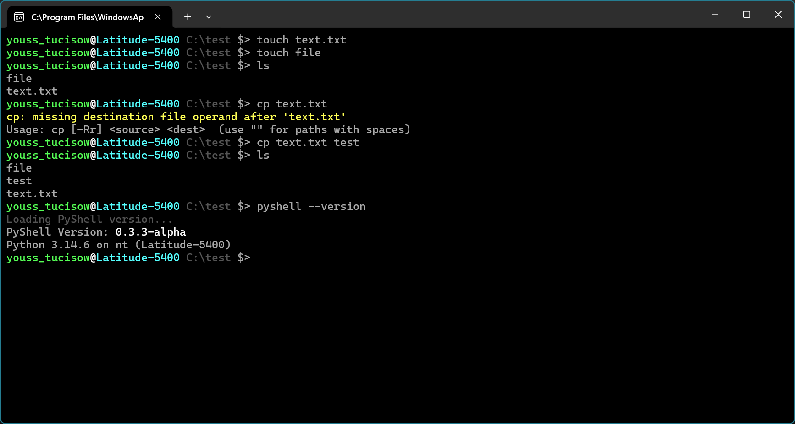
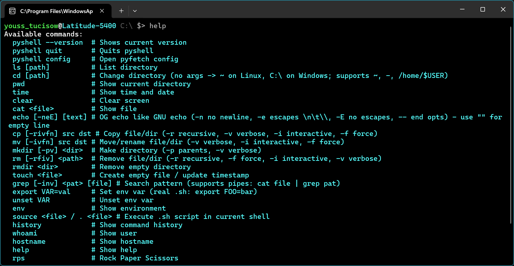

Perfecting PyShell
Making PyShell better.
WELCOME TO PYSHELL!
A fast, Python-powered shell that feels like Bash — native on Windows and Linux. Lightweight yet full-featured with pipes, redirections, history, and built-ins, crafted for Debian/Ubuntu and Windows.
SEE IT IN ACTION

Main Terminal
Replace with screenshots/screenshot-1.png
Builtin Tools
Replace with screenshots/screenshot-2.png
Cross-Platform
Replace with screenshots/screenshot-3.png
Bash tools
Replace with screenshots/screenshot-4.png
Bash tools
Replace with screenshots/screenshot-4.pngWHAT'S NEW
Making PyShell better.
Proto-typing with Shell-like script.
Download PyShell
Download it now!
Download PyShellKEEP IN TOUCH
Questions, ideas, or just want to connect? My inbox is open.
Send me a message
FIND ME ONLINE
Social links